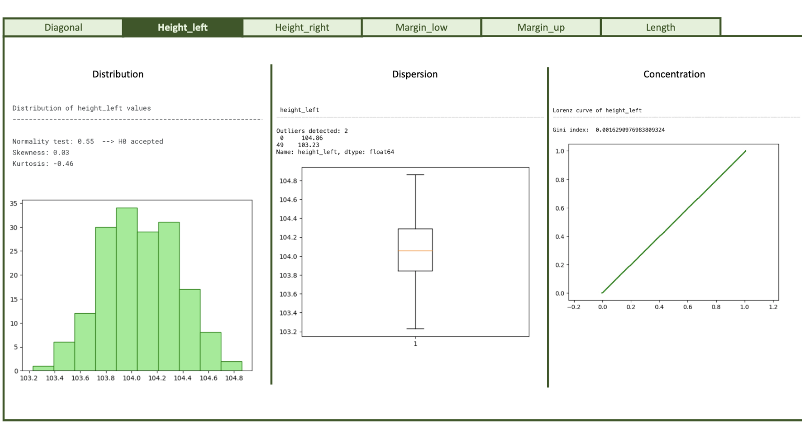
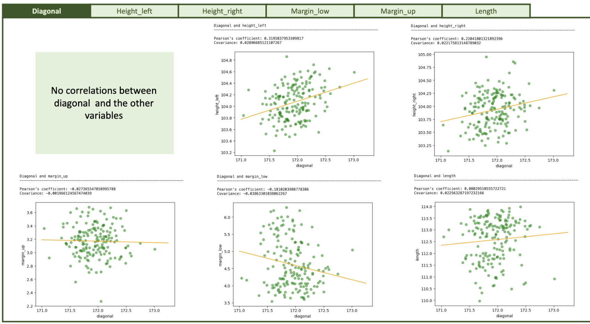
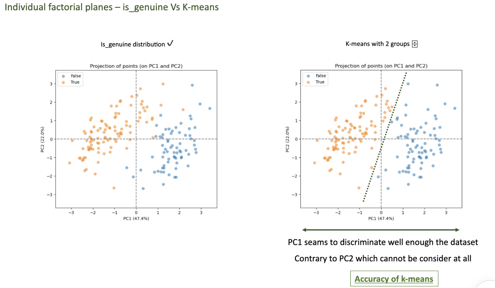
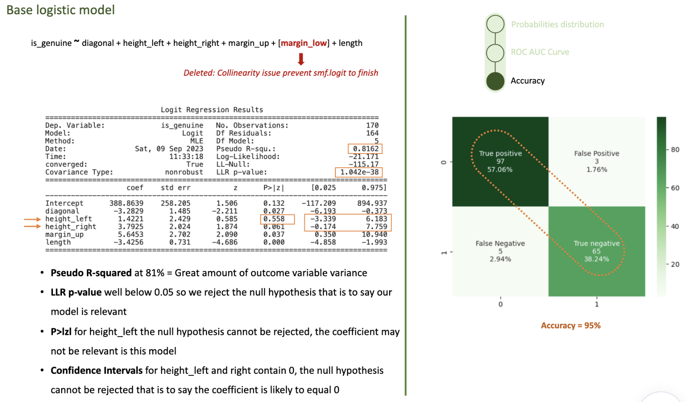
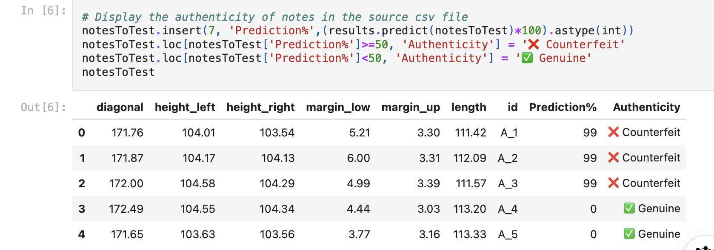

Counterfeit notes detector
An IT consulting company has been given a new mission by The Bureau of Engraving and Printing (BEP), a government agency within the U.S. Department of the Treasury as part of the fight against organized crime. The mission was to create a counterfeit detection algorithm.
Protocol
- Preliminary univariate and bivariate analyses of the dataset.
- Principal component analysis of the sample:
- Analyzing eigenvalues scree plot.
- Representing variables using correlation circles.
- Representing individuals using factorial planes.
- Analyzing the representation quality and the contribution of individuals.
- Application of classification algorithm and analyze the result.
- Modelization of the data and creation of a program that can determine if a note is genuine or counterfeit.
Data used:
Geometric characteristics of banknotes with genuine and counterfeit indications:
- The length of the note (in mm).
- The height of the note (measured on the left side, in mm).
- The height of the note (measured on the right side, in mm).
- The margin between the top edge of the note and the main image (in mm).
- The margin between the bottom edge of the note and the main image (in mm).
- The diagonal measurement of the note (in mm).
Partial results:




